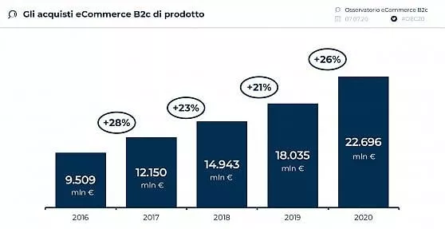
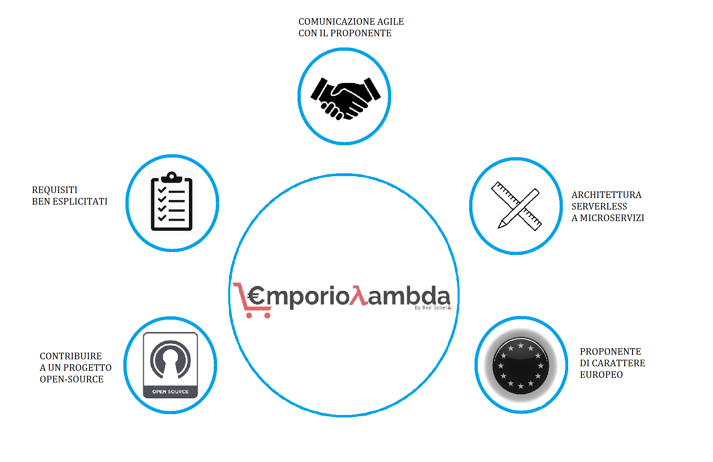
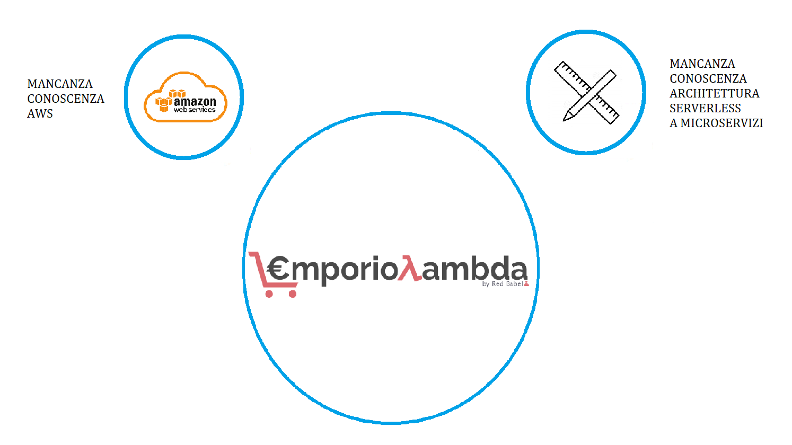
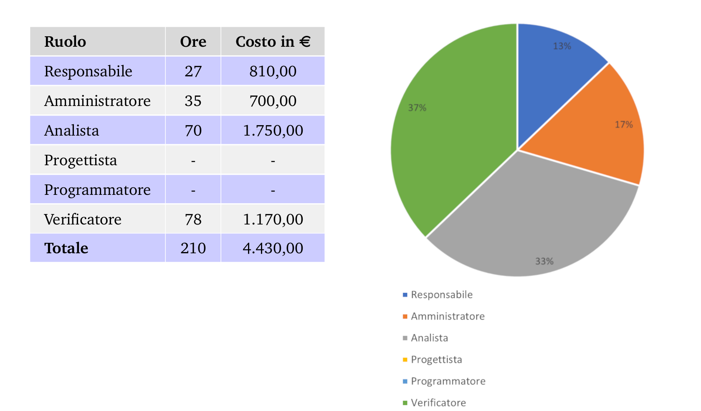
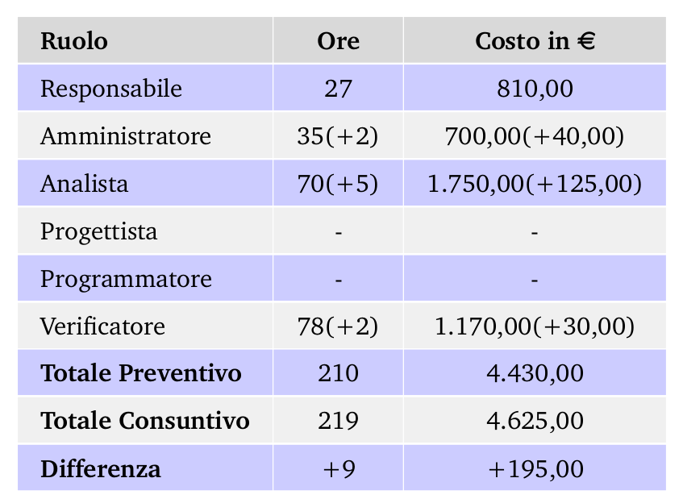
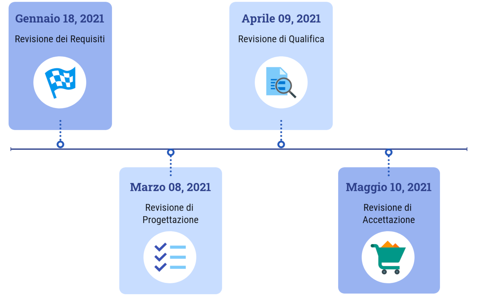
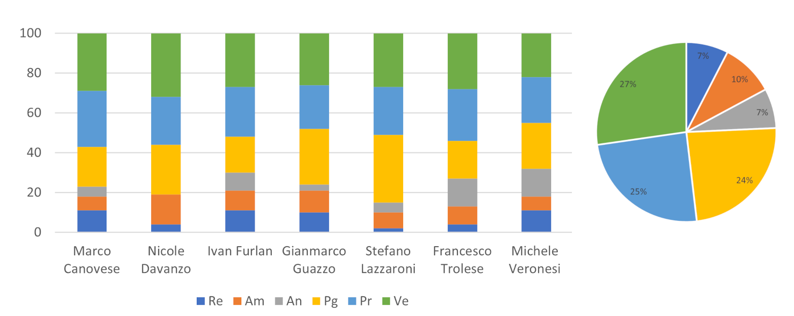
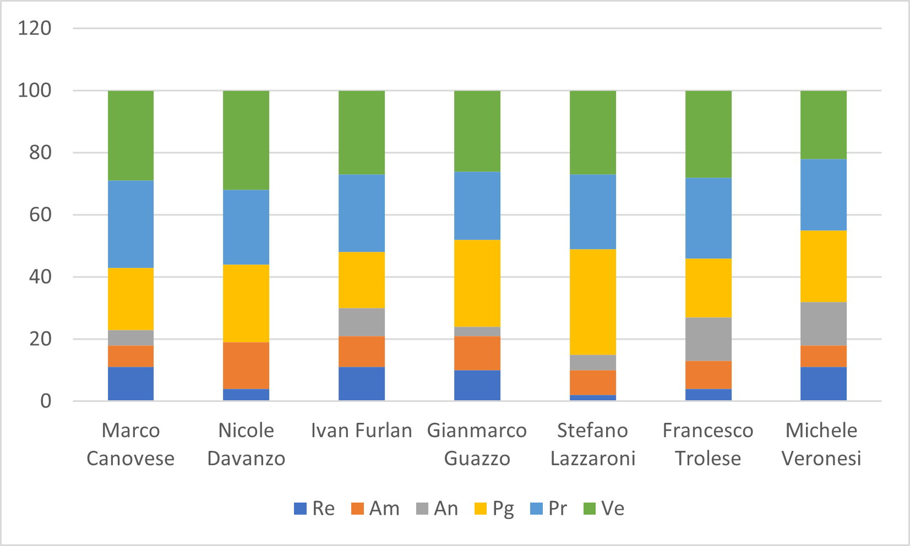

# SWException ### Corso di Ingegneria del Software Università degli Studi di Padova A.A. 2020/2021 Laurea triennale in informatica <em>Revisione dei requisiti - 18 Gennaio 2021</em> --- <!-- MARCO: elevator pitch --> # L' e-commerce oggi  ## "Fatto da mio cugino" nasconde dei rischi ## Emporio Lambda - Esecuzione del codice "on demand" - Risorse scalabili "Pay per Use" --- <!-- NICOLE: studio di fattibilità, motivazioni della scelta --> # Perchè <img src="imgs/emporio.png"> ## Punti di forza  ## Punti di debolezza  --- <!-- GIANMARCO: requisiti individuati --> --- <!-- MICHELE: piano di qualifica --> # Obiettivi di qualità Per misurare il livello di qualità del software prodotto sono state adottate le seguenti <strong>metriche</strong> ## Di processo - Variazione dei costi - Variazione delle scadenze stabilite (schedule) - Percentuale dei requisiti obbligatori soddisfatti - Percentuale dei requisiti opzionali non soddisfatti - Requisiti desiderabili non soddisfatti ## Di prodotto - Indice di Gulpease - Correttezza ortografica - Complessità ciclomatica - Complessità delle espressioni booleane - Lungherzza delle righe di codice - Code coverage Note: il PdQ avrà anche il compito di riportare le misurazioni effettuate secondo queste metriche. Al fine di garantire la qualità del software che il nostro gruppo andrà a produrre il processo di verifica sarà continuativo e presente in ogni attività progettuale. Note: quindi seguiremo il modello di sviluppo a V. <img src="imgs/V-model.jpeg" /> Note: in particolare i vari step progettuali si accompagnano da una contestuale progettazione dei test Quindi al termine dell'analisi dei requisti sono stati definiti i test di sistema, i quali mirano a garantire la <em>copertura totale</em> delle funzionalità definite. Note: questi test saranno implementati con Selenium, un software open source per effettuare test di sistema automatici su siti web. --- <!-- STEFANO: organizzazione lavoro futuro --> --- <!-- IVAN: consuntivo e pianificazione/ore individuali --> # Analisi dei Requisiti ### Preventivo analisi dei requisiti  Note: Molte ore perché è un'esperienza nuova con cui dovevamo prendere confidenza. Molte ore di verifica per cercare di limitare gli errori. ### Consuntivo di periodo  Note: Abbiamo sforato comunque, ma di poco, principalmente dovuto all'analisi dei requisiti. Non è un problema perché... ### Questa fase non viene rendicontata Note: Fase Analisi dei Requisiti e Consolidamento dei requisiti sono considerate ore di investimento. --- # Pianificazione ### Scadenze  Note: Scelte scadenze per poter permettere ad alcuni membri di partecipare alla sessione di Laurea di luglio ### Ore rendicontate pianificate  Note: Se si considerano anche le ore di investimento tutti hanno fatto circa le stesse ore in ogni ruolo.<br/>Non dire: cedo la parola e simili --- <!-- francesco: costi previsti --> # Costi previsti ### Preventivo del progetto |Ruolo |Ore | Costo in € | | -------------- | ---- | ----------- | |Responsabile | 53 | 1.590,00 € | |Amministratore | 67 | 1.340,00 € | |Analista | 50 | 1.250,00 € | |Progettista | 167 | 3.674,00 € | |Programmatore | 172 | 2.580,00 € | |Verificatore | 191 | 2.865,00 € | |Totale | 700 | 13.299,00 € | ### Impegno orario rendicontato 